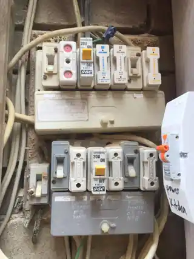
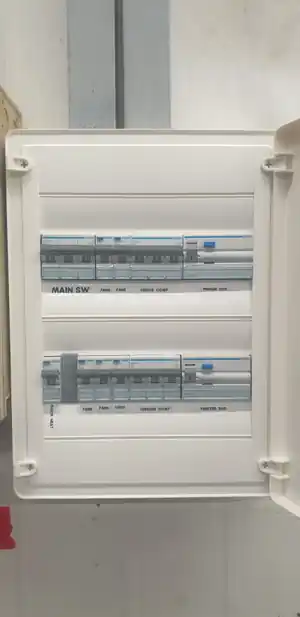

Switchboard Upgrades in Byron Bay & the Northern Rivers.
A switchboard should protect the property clearly and reliably. Older boards can become crowded, difficult to understand, short on modern protection or poorly suited to later additions. The right upgrade starts with assessing what is actually there — not replacing a board simply because it is old.
What this service covers.
Safety-switch protection
Assess existing protection and upgrade where the installation requires improvement.
Older switchboards
Replace or modernise boards that no longer suit the property or the way it is being used.
New circuits & additions
Plan switchboard changes alongside renovations, EV charging or added electrical loads.
Clear labelling
Keep circuit identification and board layout practical for future servicing.
Does my switchboard actually need upgrading?
Age is only one clue. The better question is whether the existing board still provides suitable protection, has enough room for the installation and is in sound condition for the work the property now needs.
Ceramic or porcelain fuses
Older fuse carriers are a strong reason to assess the board, particularly where protection has been added piecemeal over many years.
Limited safety-switch protection
Older installations may not have the level of RCD protection expected for the circuits and equipment now connected to the property.
Heat, moisture or corrosion
Scorching, heat damage, rust, water staining or deteriorated components deserve prompt inspection rather than cosmetic repair.
No room for new loads
EV charging, air conditioning, induction cooking, renovations and other additions can expose a board that has no practical spare capacity or circuit space.
Older boards come in many forms.
Age alone does not decide whether a board needs upgrading. Condition, protection, crowding, additions and the work being planned all matter.


Before and after: real switchboard upgrade work.
This before-and-after pair is from Berryman Electrical’s own work archive. It shows the difference between an older board with legacy fuse equipment and a cleaner, clearly organised modern switchboard.


What happens during a switchboard upgrade?
The exact scope depends on the existing installation, but the job should be understood before anything is disconnected.
1. Assess the existing board
Check the enclosure, protection, circuit count, wiring condition, labelling, available space and any obvious heat, moisture or deterioration.
2. Define the scope
Confirm what actually needs changing, what can remain, whether new loads are being added and whether metering or supply-side work needs separate coordination.
3. Upgrade and organise
Install the required protection and board components, arrange circuits clearly and keep future servicing in mind rather than simply squeezing more equipment into the enclosure.
4. Test, label and document
Test the completed work, identify circuits clearly and complete the applicable NSW electrical compliance documentation where required.
What affects the cost of a switchboard upgrade?
There is no useful one-price-fits-all figure without seeing the existing board. A simple residential upgrade and a crowded board with supply, metering or asbestos complications are different jobs.
Circuits & protection
The number of circuits, the protection required and whether additional circuits are being added all change the scope.
Enclosure & backing
The condition and size of the enclosure, weather exposure and any suspected asbestos-containing backing material can affect the work required.
Mains, metering & supply
Some jobs expose issues outside the internal board itself. Where network-side or metering work is needed, that should be identified and coordinated rather than hidden inside a vague quote.
Access & related work
Location, access, renovations, EV charging, air conditioning and other planned upgrades can make it sensible to scope several electrical changes together.
Common switchboard questions.
How do I know if my switchboard needs upgrading?
Porcelain or ceramic fuses, limited safety-switch protection, crowding, visible deterioration, heat damage, corrosion or insufficient room for planned new loads are all reasons to have the board assessed. Age alone does not automatically mean replacement is required.
Do ceramic or porcelain fuses mean I definitely need a new switchboard?
Not automatically from appearance alone. The board, enclosure, protection, wiring condition and planned work should be assessed before deciding whether an upgrade or another solution is appropriate.
How long will the power be off during a switchboard upgrade?
A switchboard upgrade normally requires the electrical supply to be isolated while the work and testing are completed. The likely outage window depends on the board, number of circuits and whether metering or supply-side work is also involved, so it is confirmed when the job is scoped.
Can a switchboard upgrade be planned with an EV charger, air conditioning or renovation?
Yes. New loads are a good reason to assess the existing board, available capacity, protection and circuit space before the new equipment is installed.
What if the old switchboard has an asbestos backing panel?
If asbestos-containing material is suspected or identified, the job should be scoped so the material is managed appropriately before or as part of the electrical work. The approach depends on the condition and extent of the material.
What if the meter, consumer mains or network connection also needs work?
Those items are assessed separately from the internal switchboard work. If accredited network-side or metering work is required, it can be identified during scoping and coordinated with the appropriate provider.
What testing and documentation is completed after the work?
The upgraded circuits and protective devices are tested, the board is labelled clearly, and the applicable NSW electrical compliance documentation is completed for the work where required.
Switchboard Upgrades across Byron Bay and nearby Northern Rivers.
This service is available across the main Berryman Electrical service area, including the locations below.